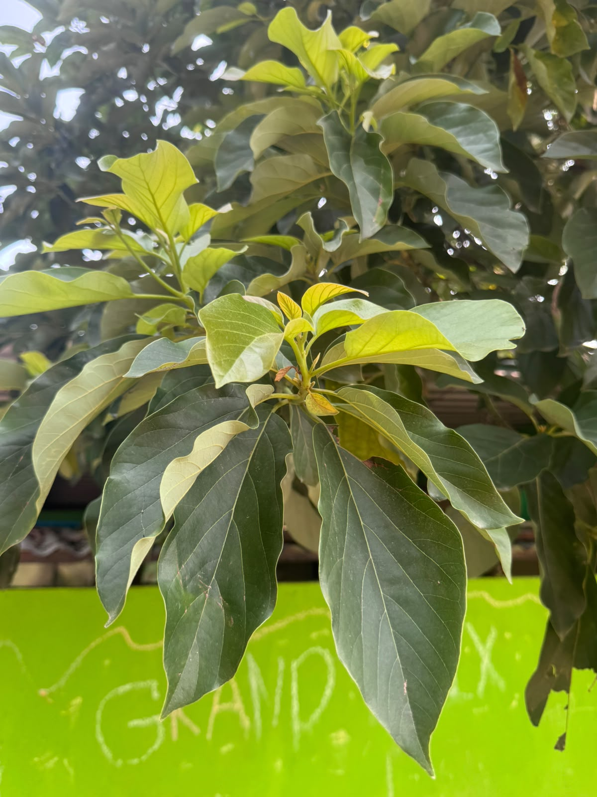
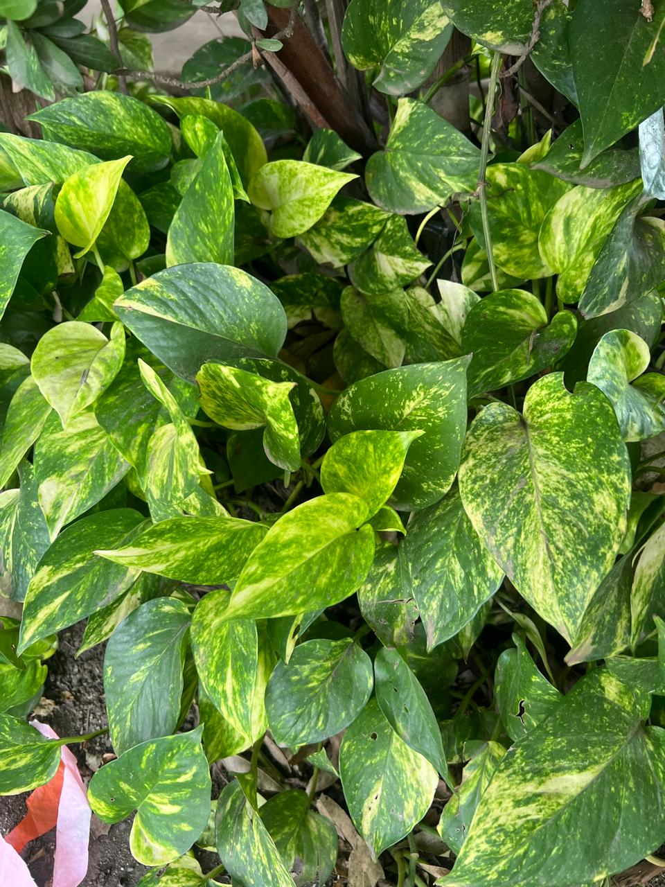
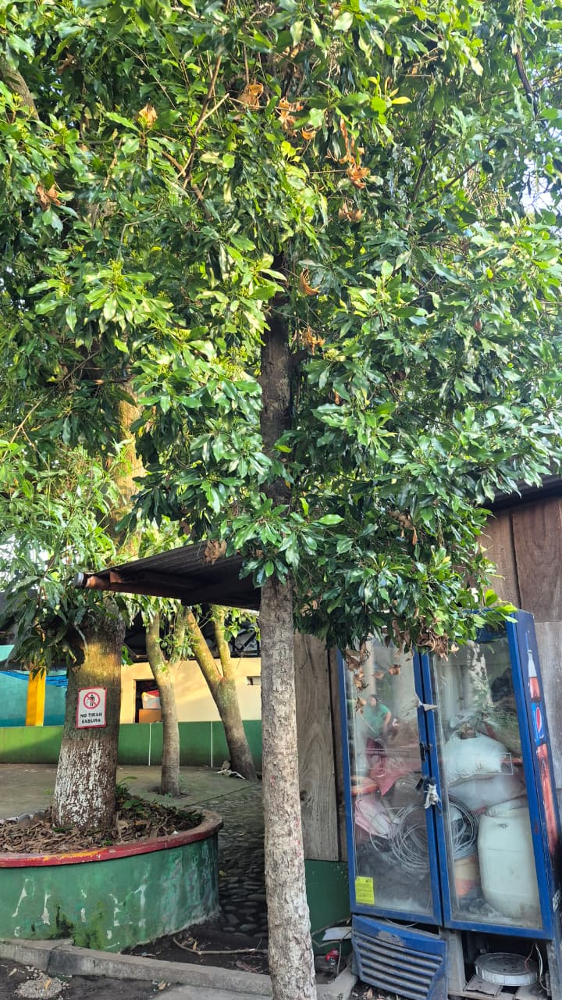
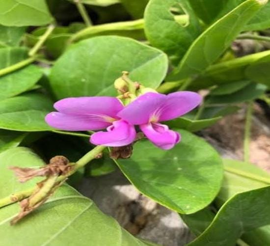
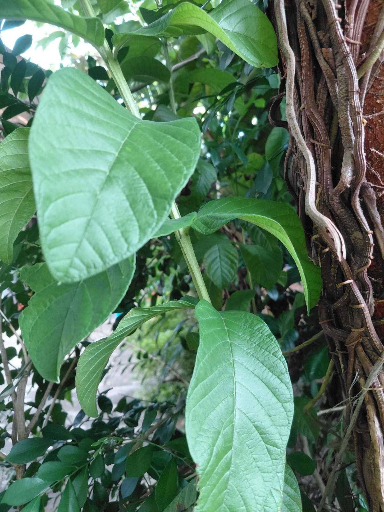

Conociendo nuestros cultivos, el trabajo agrícola y las experiencias de nuestra comunidad.
Conocer el proyecto"Estimada comunidad: Somos un equipo de estudiantes impulsados por la misma curiosidad y búsqueda del saber que los mueve a ustedes. Nace esta página como un proyecto colaborativo sobre medicina natural y botánica, pensado para ser una herramienta útil de consulta, intercambio de conocimientos y apoyo mutuo. Los invitamos a explorar, aportar y seguir aprendiendo en conjunto."
Conoce las plantas que forman parte de nuestro proyecto.

Esta es la primera planta de nuestro proyecto agropecuario.

El singonio (Syngonium podophyllum), de la familia Araceae, es una planta trepadora nativa de las selvas tropicales de América Central y del Sur. No posee un nombre en maya ancestral registrado ni aparece en el Popol Vuh o en el Chilam Balam, ya que no formaba parte del corpus principal de plantas sagradas o de uso medicinal ritual en la época prehispánica. Aunque hoy se utiliza mayoritariamente como planta ornamental de interior, en la herbolaria folclórica y tradicional mesoamericana sus hojas frescas se emplean de forma uso estrictamente externo por sus propiedades antiinflamatorias, cicatrizantes y antisépticas locales, utilizándose machacadas en forma de cataplasma para aliviar la piel con picaduras de insectos, erupciones leves y contusiones. Nota de seguridad crítica: Es una planta tóxica si se ingiere debido a sus cristales de oxalato de calcio, por lo que nunca debe consumirse en té ni infusiones, limitando su aplicación únicamente al uso tópico y manteniendo precaución con ojos y mucosas.

El clavo de olor (Syzygium aromaticum), perteneciente a la familia Myrtaceae, es una especia originaria de las Islas Molucas (Indonesia), por lo que no posee un nombre en maya ancestral ni aparece en el Popol Vuh o en el Chilam Balam, ya que fue introducida a Mesoamérica por los españoles tras la conquista. A pesar de su origen asiático, la herbolaria tradicional mesoamericana la incorporó rápidamente por sus potentes propiedades analgésicas, antisépticas, antiinflamatorias, digestivas y anestésicas locales (gracias a su alto contenido de eugenol); sus botones florales secos o sus hojas preparadas en infusión (o machacados) se utilizan para calmar el dolor de muelas y encías, aliviar la digestión pesada, combatir gases y náuseas, eliminar parásitos intestinales y aliviar molestias respiratorias. Nota: Debe usarse en dosis pequeñas, ya que un consumo excesivo puede irritar la mucosa gástrica, y no se recomienda su uso concentrado en niños pequeños o durante el embarazo.

La canavalia (Canavalia ensiformis), perteneciente a la familia de las leguminosas (Fabaceae) y conocida en la tradición maya como Ixim Che' (o frijol machete / frijol espada por la forma curva de sus vainas), es una planta mesoamericana apreciada principalmente en la medicina y agricultura tradicional. No aparece mencionada explícitamente con su nombre botánico en el Popol Vuh ni en el Chilam Balam, aunque el uso de leguminosas silvestres y trepadoras era una práctica común en la Herbolaria Maya para la curación y la protección de cultivos. Sus hojas tienen propiedades antimicrobianas, antiinflamatorias, cicatrizantes y antiparasitarias, por lo que su infusión o la aplicación de sus hojas trituradas se utiliza para aliviar afecciones de la piel (como erupciones y picaduras), calmar inflamaciones articulares, expulsar parásitos intestinales y desinfectar heridas. Nota: Las semillas crudas son tóxicas, por lo que su uso medicinal se limita principalmente a las hojas y siempre debe emplearse con precaución.

La maracuyá (Passiflora edulis), perteneciente a la familia de las pasifloras y conocida por los mayas como Ik’b’il o Poot (asociada a las variedades silvestres de la región), es una planta medicinal y frutal nativa de América. No aparece explícitamente en el Popol Vuh ni en el Chilam Balam, ya que estos textos no registran todas las especies botánicas secundarias, aunque el uso medicinal de las pasifloras silvestres en la medicina maya tradicional es milenario para calmar los nervios. Sus hojas tienen propiedades sedantes, ansiolíticas, antiespasmódicas e hipotensoras, por lo que su infusión (preparada hirviendo 2 a 3 hojas secas por taza de agua durante 5 a 8 minutos) se utiliza para combatir el insomnio, la ansiedad, el estrés, los dolores de cabeza, la presión arterial alta y los cólicos menstruales. Nota: Se debe evitar su consumo excesivo junto con medicamentos sedantes, así como durante el embarazo y la lactancia.
El aguacate (Persea americana), conocido en maya como On, es una planta medicinal y alimenticia mesoamericana de gran relevancia histórica. Aparece en el Popol Vuh como uno de los árboles frutales sagrados que sostienen a la humanidad y en el Chilam Balam dentro de las crónicas agrícolas y recetarios médicos tradicionales. Sus hojas tienen propiedades digestivas, antiinflamatorias, diuréticas, astringentes y expectorantes, por lo que su infusión (preparada hirviendo 3 a 4 hojas por litro de agua durante 10 minutos) se utiliza para aliviar cólicos, diarrea, tos, dolores menstruales, retención de líquidos y desinflamar golpes mediante compresas. Nota: Se debe evitar su uso en dosis altas durante el embarazo.
En esta sección se podrán encontrar las entrevistas realizadas durante nuestro proyecto.
Aquí colocaremos las fotografías de nuestro proyecto.